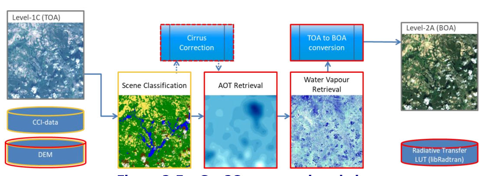
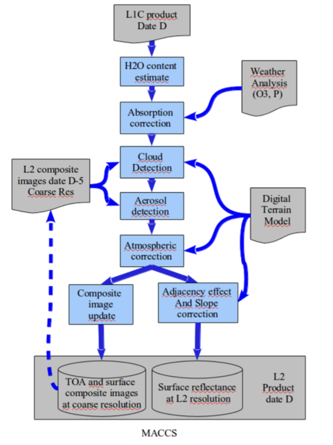

Analysis Ready Data and Level 2A Data
Number of satellites are collecting large amounts of data (tera bytes) on a daily basis
and providing data to the users in near real time. These raw images need to be
downloaded and pre-processed before they could be used for any analysis or
application. The pre-processing steps involve geometric correction, topographic
correction, radiometric calibration, and top of atmosphere correction to obtain the
surface reflectance value. This data preparation time is repetitive task and very
consuming as well and when it is needed to be carried out on global scale or need to
perform time-series analysis for longer period, or need to combine/ harmonize datasets
from different source to increase spatial and temporal resolution, it would be even more
time consuming and challenging for the users. In addition to this, high specification PC
is required to process large volume of satellite data efficiently. Due to these challenges
on the user side, the ratio of use of satellite data with respect to data production
became comparatively low. Therefore, different satellite data providers come up with
ideas of providing analysis ready data (ARD) to increase the data accessibility and
usability. Users are more interested in performing instant analysis and generating
results which is particularly important when it is needed to be carried out quick
assessment, such as in disaster response phase. In this way, data will be utilized
massively for various applications and subsequently aid in local, regional, and national
level informed decision making.
The common characteristics of the ARD definitions and approaches between CEOS,
USGS and Planet are described below:
i. Pre-processed data:
All these entities provide satellite data that have already gone
through key pre-processing steps that include geometric, radiometric and
atmospheric correction. This will facilitate reducing users time and e4orts by skipping
the data processing steps and can directly commence the analysis part.
ii. Consistent Data:
They provide geometrically and radiometrically consistent surface
reflectance data over time which is essential to carry out time series analysis for
different applications. This allow users to use the same algorithms to different data
sources and obtain consistent results that aren’t impacted by the e4ects of the
atmosphere over time. All the archived data are processed at the same level of
processing and are available to the users.
iii. Data Interoperability:
Di4erent satellites have varying operational date, revisit
times, spatial resolutions, and spectral capabilities. However, they provide
interoperable datasets by normalizing the di4erences so that datasets could be
integrated with other datasets seamlessly despite of di4erences in sensors,
satellites, data sources and data producers. This will allow users to combine all these
datasets and produce more continuous, coverage rich, and reliable datasets. In
addition to this, cross validation can also be carried out which is crucial for precise
monitoring applications.
iv. Organized Data:
They provide the deep stacks of organized data, which allows user
to retrieve multiple data e4iciently and make a time-series analysis conveniently.
ESA Sentinal-2 Level-2A data
The ESA Sentinal-2 Level-2A products are the ortho-rectified (UTM/WGS84 projection)
image. This product is atmospheric corrected surface reflectance data, which is
generated or can be generated from Sentinal-2 Level-1C product. Each tile covers the
110*110 km2 (data volume of 800MB) of the Earth surface. However, the actual coverage
is 100*100 km2 and the remaining coverage provides the overlap with the neighboring
tiles which is essential for ortho-rectification. Each product is available in three different
spatial resolution; 10m, 20m and 60m in distinct folder that consists different spectral
band images. 10m resolution folder includes bands 2, 3, 4 and 8 images, while 20m
resolution comprises bands 1-7, 8A, 11 and 12 images, and 60m resolution
encompasses bands 1 and 9 images. Besides, aerosol optical thickness (AOT) map,
and water vapor (WV) map are available in all spatial resolutions. However, a scene
classification (SCL) map is available only in 20m and 60m resolution. The products are
found in Sentinel-SAFE (Standard Archive Format for Europe) format including image
data in JPEG2000 format, quality indicators, auxiliary data and metadata.

Figure 1: Sen2Cor Level 2A Processing Chain. Retrieved from S2-PDGS-MPC-ATBD-L2A
The ESA Sentinel-2 Level-2A data are produced by using the Sen2Cor processor. Figure
1 represents the Sen2Cor Level 2A processing chain that consists of several steps.
Firstly, the scene classification map is generated using the scene classification (SCL)
algorithm from the Sentinal-2 Level-1C TOA reflectance product resampled at a spatial
resolution of 20m using climate change initiative (CCI) data, land cover information, and
a Digital Elevation Model (DEM) as an auxiliary input. This classification map consists of
three different classes for clouds (cloud_medium_probability, cloud_high_probability,
this_cirrus), together with six different classifications for cast shadows, cloud shadows,
vegetation, not vegetated, water and snow/ice with two additional classes i.e.
unsaturated_or_defective and unclassified. In the atmospheric correction step, Aerosol
Optical Thickness (AOT) map is derived using the Dense Dark Vegetation (DDV)
algorithm with reference to the areas with known reflectance characteristics in the
scene specifically DDV and water bodies. Water vapour (WV) map are generated from
band 8a (atmospheric window region) and band 9 (absoption region) using Atmospheric
Pre-corrected Differential Absorption (APDA) algorithm. After this, cirrus correction is
performed that is based on band 10 reflectance, which is an optional step. Finally, these
informations along with set of look-up tables (LUT) generated through LIBRADTRAN
radiative transfer model is used to convert TOA reflectance value to BOA reflectance
(i.e., surface reflectance).
Sen2Cor
Sen2Cor is a processor that is used for generating Sentinal-2 Level 2A products by processing Sentinal-2 Level 1C products. It takes the Top-of-Atmosphere (TOA) Level 1C data as an input and generates atmospheric corrected bottom-of-atmosphere (BOA) (i.e. surface reflectance) image. Optionally, it also facilitates in creating terrain and cirrus corrected images. In addition to this, it also generates Aerosol Optical Thickness (AOT), Water Vapor (WV), Scene Classification (SCL) Map and Quality Indicators for cloud and snow probabilities. All these images are generated in three different spatial resolutions (i.e. 10m, 20m and 60m).
L2A data by MAJA
Figure 2 represents the MAJA Level 2A processing chain. The French Land Data Center, Theia, at CNES, and the Earth Observation Center (EOC), at DLR, produce and distribute Level-2A products (L2A). MAJA is an Atmospheric Correction processor designed to produce land surface reflectances (Level 2A) from orthorectified Top-of-Atmosphere satellite imagery (Level 1C). Several operations are involved in the production of Level-2A data. The first step involves the estimation of the amount of water vapor, using the strong water vapor band at 940 nm. Then, the correction for molecular absorption (including water vapor) is carried out. The composite images obtained by combining multi-temporal and multi-spectral images are then used to better detect the clouds, cloud shadows, water, snow and estimate the optical thickness of aerosol. This composite image is updated using the cloud-free output obtained from each processing. Then, the correction of cirrus clouds using cirrus band at 1370 nm can be applied, which is an optional step. Then, using the information (optical thickness of the aerosols) obtained from the previous step, and referring to the pre-processed Look-up Tables (LUT) computed using the Successive Order of Scattering (SOS) radiative transfer code, correction of scattering caused by molecules and aerosols in the atmosphere is applied. In this way, absorption-corrected TOA reflectance is converted into ground surface reflectance. Following this, correction of adjacency effects is applied, which addresses the blurring effect in the image. In the final step, terrain effects correction is applied to account for the effects of slopes on illumination and provide accurate surface reflectance regardless of topography.

Figure 2: MAJA Level 2A Processing Chain. Retrieved from CESBIO
The main differences in the production chain of Level-2A data between Theia and ESA
are as follows:
i. Processor:
ESA and Thea produced level-2A product using MAJA and Sen2Cor
processors respectively.
ii. Atmospheric Correction Algorithm:
For atmospheric correction, the Look-up Tables
(LUT) are computed based on Successive Order of Scattering (SOS) radiative transfer
code model in Theia level 2A processing chain, whereas ESA level 2A processing
chain is based on LIBRADTRAN radiative transfer model.
iii. Reference Map:
Single scene classification map is generated and used as reference
in further steps in aerosols and cloud detection in ESA level 2A processing chain
whereas a composite map from multi-temporal datasets is created and is updated
using the cloud-free output obtained from each processing in Theia level 2A
processing chain. Therefore, cloud and shadow detection are based on time-series
information in Theia Level-2A processing and is more accurate.
iv. Aerosols Detection:
In ESA level 2A processing chain, Aerosol Optical Thickness
(AOT) is estimated using the Dense Dark Vegetation (DDV) algorithm with reference
to the areas with known reflectance characteristics in the single scene classification
specifically DDV and water bodies. But multi-temporal, and multi-spectral criteria are
combined to derive the Atmospheric Optical Depth in Theia level-2A processing
chain, following the dark pixel hypothesis that a quick shift of reflectance is more
probably linked to a change in the mix of atmospheric aerosols than to a change of
surface properties. Moreover, tables generated from SOS models are also used in
aerosol detection.